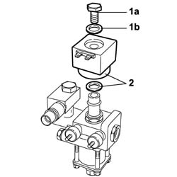

1044E16 solenoid coil on cng system pressure reduction unit r r with pressure reduction unit removed
- Path
- Procedures > 10 ENGINE > 1044 FUEL CIRCUIT PUMP/AND DEVICES > 1044E gas pressure control device > 1044E16 solenoid coil on cng system pressure reduction unit r r with pressure reduction unit removed
- Kind
- repair procedure (removal / refitting; the operation number is the code)
- Applies to
- all engines; all production periods; only with equipment: BIPOWER
- Interactive page
- https://sloeber94.github.io/elrnDB-fDbl/en/#/2584544
Applies to: all engines; all production periods; only with equipment: BIPOWER
 Removing
Removing
 Refitting
Refitting1. Undo the bolt-plug (1a) complete with seal (1b) fixing the solenoid valve coil (1c).
2. Remove the solenoid valve coil and seal.

Applies to: all engines; all production periods; only with equipment: BIPOWER
Refitting
RemovingReposition the solenoid valve coil on the coil holder ring nut.
Secure the solenoid valve coil ot the ring nut using the bolt-plug and tighten the latter to the recommended torque.
 | Fastening | Component | Ø | Value (daNm) |
|---|---|---|---|---|
- | Bolt | SOLENOID VALVE COIL ON PRESSURE REDUCTION UNIT | - | 1.15 ÷ 1.35 |
Check the seal of the components affected during the dismantling.